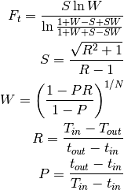
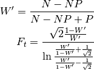
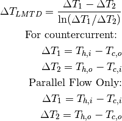

heat_transfer¶
General functional algorithms for the design of heat exchangers.
-
biosteam.units.design_tools.heat_transfer.heuristic_overall_heat_transfer_coefficient(ci, hi, co, ho)[source]¶ Return a heuristic estimate of the overall heat transfer coefficient [U; in kW/m^2/K]. Assume U is 0.5 kW/m^2/K if heat exchange is sensible and 1.0 kW/m^2/K otherwise.
- Parameters
ci (Stream) – Cold inlet stream.
hi (Stream) – Hot inlet stream.
co (Stream) – Cold outlet stream.
ho (Stream) – Hot outlet stream.
- Returns
U – overall heat transfer coefficient [kW/m^2/K].
- Return type
float
-
biosteam.units.design_tools.heat_transfer.heuristic_pressure_drop(inlet_phase, outlet_phase)[source]¶ Return a heuristic estimate of the pressure drop [dP; in psi]. If the fluid changes phase, dP is 1.5 psi. If the fluid remains a liquid, dP is 5 psi. If the fluid remains a gas, dP is 3 psi.
- Parameters
inlet_phase (str) –
outlet_phase (str) –
- Returns
dP – Pressure drop [psi].
- Return type
float
-
biosteam.units.design_tools.heat_transfer.heuristic_tubeside_and_shellside_pressure_drops(ci, hi, co, ho, tubeside_iscooling=True)[source]¶ Return an estimate of tubeside and shellside pressure drops.
- Parameters
ci (Stream) – Cold inlet stream.
hi (Stream) – Hot inlet stream.
co (Stream) – Cold outlet stream.
ho (Stream) – Hot outlet stream.
tubeside_iscooling (bool) – True of tubeside fluid is cooling.
- Returns
dP_tube (float) – Tubeside pressure drop (psi)
dP_shell (float) – Shellside pressure drop (psi)
-
biosteam.units.design_tools.heat_transfer.order_streams(in_a, in_b, out_a, out_b)[source]¶ Return cold and hot inlet and outlet streams.
- Parameters
in_a (Stream) – Inlet a.
in_b (Stream) – Inlet b.
out_a (Stream) – Outlet a.
out_b (Stream) – Outlet b.
- Returns
ci (Stream) – Cold inlet.
hi (Stream) – Hot inlet.
co (Stream) – Cold outlet.
ho (Stream) – Hot outlet.
-
biosteam.units.design_tools.heat_transfer.compute_Fahkeri_LMTD_correction_factor(Tci, Thi, Tco, Tho, N_shells)[source]¶ Return the log-mean temperature difference correction factor Ft for a shell-and-tube heat exchanger with one or an even number of tube passes, and a given number of shell passes, with the expression given in 1 and also shown in 2.

If R = 1 and logarithms cannot be evaluated:

- Parameters
Tci (float) – Inlet temperature of cold fluid, [K]
Thi (float) – Inlet temperature of hot fluid, [K]
Tco (float) – Outlet temperature of cold fluid, [K]
Tho (float) – Outlet temperature of hot fluid, [K]
shells (int, optional) – Number of shell-side passes, [-]
- Returns
Ft – Log-mean temperature difference correction factor, [-]
- Return type
float
Notes
This expression is symmetric - the same result is calculated if the cold side values are swapped with the hot side values. It also does not depend on the units of the temperature given.
Examples
compute_Fahkeri_LMTD_correction_factor(Tci=15, Tco=85, Thi=130, Tho=110, N_shells=1) 0.9438358829645933
References
- 1
Fakheri, Ahmad. “A General Expression for the Determination of the Log Mean Temperature Correction Factor for Shell and Tube Heat Exchangers.” Journal of Heat Transfer 125, no. 3 (May 20, 2003): 527-30. doi:10.1115/1.1571078.
- 2
Hall, Stephen. Rules of Thumb for Chemical Engineers, Fifth Edition. Oxford; Waltham, MA: Butterworth-Heinemann, 2012.
-
biosteam.units.design_tools.heat_transfer.compute_heat_transfer_area(LMTD, U, Q, ft)[source]¶ Return required heat transfer area by LMTD correction factor method.
- Parameters
LMTD (float) – Log mean temperature difference
U (float) – Heat transfer coefficient
Q (float) – Duty
-
biosteam.units.design_tools.heat_transfer.compute_LMTD(Thi, Tho, Tci, Tco, counterflow=True)[source]¶ Return the log-mean temperature difference of an ideal counterflow or co-current heat exchanger.

- Parameters
Thi (float) – Inlet temperature of hot fluid [K].
Tho (float) – Outlet temperature of hot fluid [K].
Tci (float) – Inlet temperature of cold fluid [K].
Tco (float) – Outlet temperature of cold fluid [K].
counterflow (bool, optional) – Whether the exchanger is counterflow or co-current.
- Returns
LMTD – Log-mean temperature difference [K]
- Return type
float
Notes
Any consistent set of units produces a consistent output.
Examples
>>> LMTD(100., 60., 30., 40.2) 43.200409294131525 >>> LMTD(100., 60., 30., 40.2, counterflow=False) 39.75251118049003